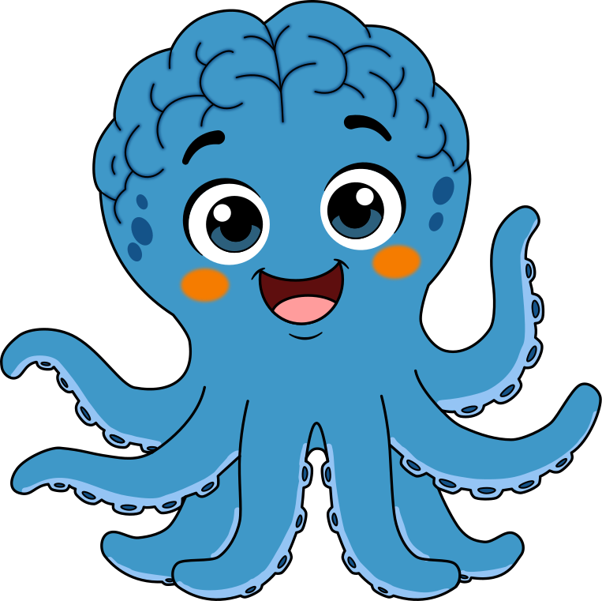
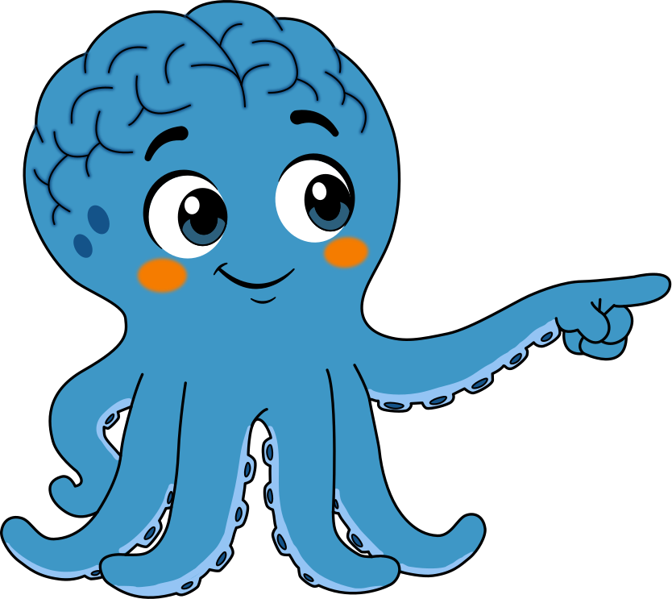

Padres de familia
Programa para niños de 0 a 15 años: sesiones semanales que entrenan el cerebro a través del movimiento y el juego con sentido, con seguimiento medible cada 8 semanas.
Ver fases por edadEn El Gimnasio del Cerebro diseñamos sesiones para entrenar memoria de trabajo, atención, autocontrol y flexibilidad cognitiva, a través de retos con movimiento y sentido, no de hojas de ejercicios. Para niños desde los 0 años, colegios, adultos de 18 a 50 años que quieren aprender inglés y adultos mayores que quieren proteger su mente.

La misma base científica, adaptada a cada etapa de la vida.
Programa para niños de 0 a 15 años: sesiones semanales que entrenan el cerebro a través del movimiento y el juego con sentido, con seguimiento medible cada 8 semanas.
Ver fases por edadFormación docente en neurociencia aplicada: un taller experiencial gratuito y una ruta de acompañamiento real en el aula, no una charla aislada.
Agendar conversaciónPrograma Adulto Vital: circuitos de movimiento y reto mental simultáneo para proteger y mantener la función cognitiva, no para "curar" ni prometer resultados clínicos.
Conocer el programaFase Experta: aprende inglés entrenando tus funciones ejecutivas al mismo tiempo. El inglés es el vehículo, no la meta en sí misma.
Conocer la Fase ExpertaNada se enseña como contenido académico suelto. Todo se entrena a través de un reto con sentido.
Toda competencia nueva se ejecuta físicamente antes de ponerle nombre. Se entrena con el cuerpo antes que con la hoja de papel.
Cada sesión vive dentro de un tema envolvente: una situación real que el estudiante resuelve, no una lista de ejercicios descontextualizados.
Evaluamos cada 8 semanas para mostrar avance real en las tres áreas: desarrollo cognitivo, habilidades lingüísticas e inteligencia emocional.
0 – 2 años
Vínculo, exploración sensorial y fundamentos de atención y lenguaje.
3 – 5 años
Juego simbólico, autocontrol emergente y lenguaje expresivo.
6 – 10 años
Pensamiento concreto, memoria de trabajo y lectoescritura cognitiva.
11 – 15 años
Pensamiento abstracto, metacognición e identidad.
Algunos de los hallazgos en los que se apoya nuestro método:
Todas las sesiones duran 55 minutos. Precio por estudiante, sin letra pequeña.
Sesión individual personalizada
$130.000 / sesión
Paquete mensual (4 sesiones): $480.000
Grupos de 3 personas
$85.000 / sesión
Paquete mensual (4 sesiones): $320.000
5 personas por sesión
$55.000 / sesión
Paquete mensual (4 sesiones): $200.000
Empieza siempre con una evaluación cognitiva gratuita, antes de elegir modalidad.
Por qué "se distrae" o "se rinde fácil" no es una sentencia, es una señal de que hay algo entrenable.
Lo que le pasa al cerebro con los años empieza antes de lo que pensamos, y hay factores que sí están en tus manos.

Cuéntanos qué necesitas y te orientamos: programa infantil, formación docente para tu colegio, Fase Experta de inglés o Programa Adulto Vital.
Escríbenos por WhatsApp